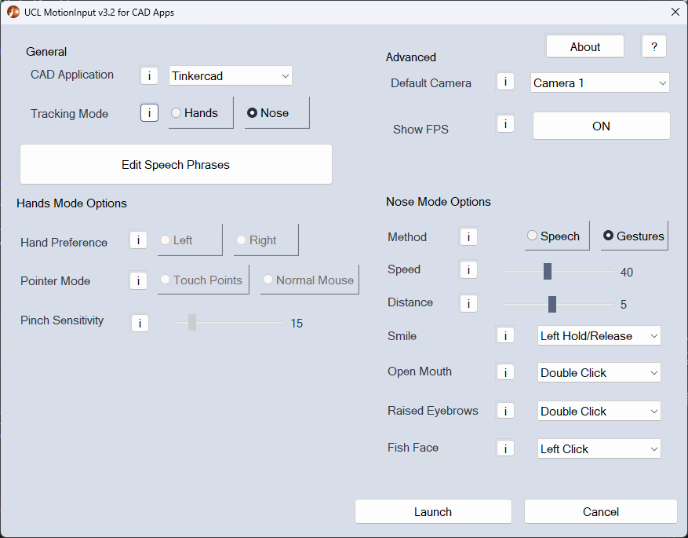
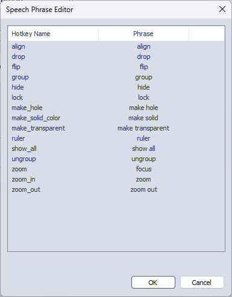
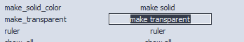

In this section of the MotionInput development blog, we'll explore the technical details of how the MotionInput for CAD system was built. This section is divided into two major components: the MotionInput implementation and the MFC implementation.
MotionInput Implementation
In the MotionInput Implementation section, we'll explain how we optimised the existing solution for CAD software.
Speech Events
The majority of functionality can be added using speech shortcuts that are already implemented within the existing MotionInput. Thus, we added all speech commands with the following steps.
-
First added the following
SpeechEventtoevents.json:"speech_hotkey_PROGRAMNAME_COMMANDNAME": { "type": "SpeechEvent", "args": { "phrase": "COMMANDPHRASE", "hotkey_combo": [ "COMMANDKEYS" ] }, "bodypart_names_to_type": { "speech": "speech" }, "triggers": { "COMMANDPHRASE": [ "Keyboard", "hotkey_combination" ] } }
This event is made out of multiple components. Here is a breakdown of some important ones:
speech_hotkey_PROGRAMNAME_COMMANDNAME: This is the unique identifier for the event. It is prefixed withspeech_hotkey_as this is the conventional name for anySpeechEvent. This is combined withPROGRAMNAMEwhich refers to the name of the CAD software, (i.e. TinkerCAD, SketchUp), as well asCOMMANDNAMEwhich is the name of a specific command. This ensures that the event is easily identifiable and specific to the program and command it is associated with.args: This key contains the arguments needed for the event to be executed. For our case, we only need two arguments:phrase: This is the phrase that needs to be spoken by the user to trigger the event, e.g. "zoom", "rotate", etc.hotkey_combo: This key defines the triggers for the event. There is only one trigger for aSpeechEvent. The key of the trigger is the command phrase. The value of the trigger is an array that consists of two elements: the gesture event handler and the function that needs to be executed within it.triggers: This key contains the bodypart that is used to trigger the event. In our case, we only use speech, so we only need to include the speech bodypart.
The only CAD related events that we added that differ from this format are the change dictionary commands, which look as follows:
"speech_change_dictionary_PROGRAMNAME": { "type": "SpeechEvent", "args": { "phrase": "change dictionary PROGRAMNAME" }, "bodypart_names_to_type": { "speech": "speech" }, "triggers": { "change dictionary PROGRAMNAME": [ "ChangeDictionary", "change_dictionary_PROGRAMNAME" ] } } -
Then we added all of the
COMMANDPHRASEs togestures.jsonwith the following template:"COMMANDPHRASE": { "COMMANDPHRASE": true }
Gestures need to be added to this file to let MotionInput know that they exist. This step is handled by our
CadEditorclass. - Then all of the event names (i.e.
speech_hotkey_PROGRAMNAME_COMMANDNAME) are added to the current mode inmode_controller.json. Events that are not in the current mode can not be executed. This step is also handled by ourCadEditorclass.
CAD JSON
{
"custom": {
"sketchup": {
"shortcuts": {
"arc": "arc",
"circle": "circle",
"eraser": "rubber",
"extrude": "pull",
"lasso": "lasso",
"line": "line",
"move": "move",
"offset": "offset",
"orbit": "orbit",
"paint_bucket": "paint",
"pan": "pan",
"rectangle": "square",
"rotate": "turn",
"scale": "scale",
"select": "select",
"tape_measure": "measure",
"zoom": "zoom",
"zoom_extents": "zoom bounds",
"zoom_windows": "zoom windows"
}
},
"tinkercad": {
"shortcuts": {
"align": "align",
"drop": "drop",
"flip": "flip",
"group": "group",
"hide": "hide",
"lock": "lock",
"make_hole": "make hole",
"make_solid_color": "make solid",
"make_transparent": "make transparent",
"ruler": "ruler",
"show_all": "show all",
"ungroup": "ungroup",
"zoom": "focus",
"zoom_in": "zoom",
"zoom_out": "zoom out"
}
}
},
"mode": {
"program": "tinkercad"
},
"universal": {
"shortcuts": {
"select_all": "select"
}
}
}
The cad.json file has been designed to store the
essential data
required for our solution. It comprises three primary sections:
mode, universal, and custom,
each serving a distinct purpose:
mode: This section identifies the currently active program.universal: This section contains commands that function across multiple programs.custom: This section accommodates commands exclusive to a specific program.
Within each program, a dictionary of shortcuts is organized into key-value pairs, where the key represents the CAD function, and the value corresponds to its respective trigger phrase.
The choice to structure the JSON file in the provided format was guided by the following considerations:
- Modularity: The separation into distinct sections allows for easier maintenance and future expansion of the file as new programs or additional features are added.
- Readability: The JSON file follows a consistent and clear hierarchical structure, which improves readability for both human users. Furthermore, it enables efficient access and retrieval of relevant information based on the desired context.
- Universality: The
universalsection accommodates shortcut key mappings that are common across multiple software programs. This not only streamlines the process of defining shortcuts but also promotes consistency in user experience. - Compatibility: The
modesection allows for the easy integration of different software programs. By specifying the current active program, such as "tinkercad" in this case, users can quickly adapt the JSON file to their preferred program without needing to modify the entire structure.
Hotkey Combination
Within our solution, we had been using the Keyboard
gesture event
handler, but we encountered an issue with the hotkey_combination
function which was not working as expected. Specifically, the old
version of the function did not register the inputs with SketchUp or
TinkerCAD, which are the software applications we use to create 3D
models. After investigating the issue, we found that the >pyautogui
library used in the old version of the function was not able to
simulate keyboard inputs in a way that was recognized by these
applications. In order to resolve this issue, we decided to switch
to a different approach using pydirectinput, which has
proven to
be reliable and efficient in handling multiple keyboard inputs
simultaneously.
@staticmethod
def hotkey_combination(*args) -> None:
for arg in args:
pydirectinput.keyDown(arg)
for arg in args:
pydirectinput.keyUp(arg)Change Dictionary
The primary motivation for creating the ChangeDictionary
class is
to address the current limitations of the default language
recognition module KITA, which is currently designed to
detect the
entire English language. The broad scope can lead to low accuracy in
recognising less common words, causing them to be mixed up with
similar sounding words. As a result, many speech commands are not
recognised accurately, leading to an unsatisfactory user experience
as a command may need to be repeated multiple times before it is
properly recognised and executed.
To overcome this problem, the ChangeDictionary class
restricts
the scope of KITA by adding a parameter to it's KaldiRecognizer
which only allows for KITA to recognise the words which
are
contained in the JSON list that is provided.
To complete this the ChangeDictionary class employs
four
functions:
__init__(self)change_dictionary_default(self)change_dictionary_tinkercad(self)change_dictionary_sketchup(self)
The initialisation method __init__ is as follows:
def __init__(self):
"""
Initializes the ChangeDictionary object, setting up the KITA object,
JSONEditor, and command dictionaries for universal commands, Tinkercad
commands, and SketchUp commands.
"""
self.kita = KITA()
self.cad_editor = JSONEditor("cad.json")
self.universal_commands = self.cad_editor.get_data("universal/shortcuts")
self.tinkercad_commands = self.cad_editor.get_data("custom/tinkercad/shortcuts")
self.sketchup_commands = self.cad_editor.get_data("custom/sketchup/shortcuts")
with open(os.path.join(DATA_PATH, "custom_dictionary", "basic.json"), "r") as f:
self.basic = json.load(f)It loads the current instance of the voice recognising module
KITA and extracts commands from the cad.json
file by
initialising a JSONEditor object. The commands are
extracted on
initialisation instead of being hard-coded into a JSON file as this
allows for the allowed word list to dynamically change as a user
customises the speech trigger phrases to their preferences. It also
loads the word list contained in custom_dictionary/basic.json
which contains words which are necessary for general MotionInput
usage, and looks as follows:
["transcribe", "stop", "change", "language", "correction", "mode", "speaker", "identify", "locked", "enable", "mode", "disable", "back",
"capital", "letters", "mute", "close", "window", "minimize", "maximize", "left", "right", "files", "screenshot", "next", "save", "cut",
"copy", "paste", "undo", "print", "switch", "go", "remove", "windows", "key", "run", "start", "menu", "macros", "up", "down", "enter",
"escape", "show", "full", "screen", "space", "page", "volume", "butterfly", "click", "double", "reset", "control", "hold", "release",
"range", "reset", "ranges", "new", "message", "redo", "find", "file", "open", "project", "go", "to", "line", "comment", "line", "build",
"solution", "debug", "without", "debug", "save", "all", "council", "selection", "process", "in", "finding", "solution", "explorer", "output",
"window", "replace", "rename", "exceptions", "compile", "zoom", "out", "insert", "editor", "clipboard", "change", "dictionary", "sketchup",
"tinkercad", "default", "[unk]"]The keyword "[unk]" is included as it highly improves
the
reliability of KITA. Without it the recogniser would
always map
any spoken text to one of the command words, even the spoken text
was not a command. "[unk]" allows for unclear text to
be ignored
instead of triggering the closest possible command.
The function change_dictionary_default resets KaldiRecogniser
to its default configuration so that the whole English language can
be recognised, which is useful if the user does not want to CAD
software specific actions with MotionInput.
def change_dictionary_default(self) -> None:
"""
Resets the KaldiRecognizer to its default configuration, in which it
understands the whole English language.
"""
self.kita.recogniser = KaldiRecognizer(KITA.model, KITA.samplerate)
The function change_dictionary_tinkercad changes KaldiRecognizer
to accept words from either the TinkerCAD speech trigger phrases or
basic.json word list.
def change_dictionary_tinkercad(self) -> None:
"""
Sets the KaldiRecognizer to recognize Tinkercad-specific commands.
"""
tinkercad_phrases = list(self.tinkercad_commands.values())
phrase_words = [word for phrase in tinkercad_phrases for word in phrase.split()]
self.kita.recogniser = KaldiRecognizer(KITA.model, KITA.samplerate, json.dumps(self.basic + phrase_words))
The function change_dictionary_sketchup works
similarly. Any
further program that may be added to our solution would need to have
it's own respective change dictionary function added here.
As these functions need to be accessible by speech commands, the
ChangeDictionary class is implemented as a GestureEventHandler.
To achieve this inside gesture_event_handlers/__init__.py
we added
a variable self._change_dictionary = None and modified
self._handlers to contain "ChangeDictionary":self._get_change_dictionary_func.
This ensures that
ChangeDictionary is a singleton and only one instance
can exist at
a time.
The following functions were also added:
# Change Dictionary
def _get_change_dictionary_func(self, name: str):
""" Change Dictionary """
self._check_change_dictionary_initialized()
funcs = {
"change_dictionary_default": self._change_dictionary.change_dictionary_default,
"change_dictionary_tinkercad": self._change_dictionary.change_dictionary_tinkercad,
"change_dictionary_sketchup": self._change_dictionary.change_dictionary_sketchup,
}
if name not in funcs:
raise RuntimeError(
"Attempt to get an undefined event handler function:" + name + " from KITA ChangeDictionary")
return funcs[name]
def _check_change_dictionary_initialized(self):
""" Check Change Dictionary """
if self._change_dictionary is None:
self._change_dictionary = ChangeDictionary()These functions initialise the instance of ChangeDictionary
and list the available functions within the event handler so that
they can be used by an event.
CAD Editor
The CadEditor class has been developed to streamline
the process of
updating and managing custom speech commands that are required for
the chosen CAD software.
To complete this the CadEditor class employs four
functions:
__init__(self)update_in_current_mode(self, phrase_name, program)change_phrase(self, program, command_name, phrase)update_cad_phrases(self, program, commands)
The initialisation method __init__ is as follows:
def __init__(self):
# Initialize the editors for handling JSON data
self.gesture_editor = GestureEditor()
self.event_editor = EventEditor()
self.cad_editor = JSONEditor("cad.json")
self.mode_editor = ModeEditor()
self.change_dictionary = ChangeDictionary()
# Retrieve the current program, mode, and events
self.current_program = self.cad_editor.get_data("mode/program")
self.current_mode = self.mode_editor.get_data("current_mode")
self.current_events = self.mode_editor.get_data(f"modes/{self.current_mode}")
# Retrieve commands for different CAD programs
self.universal_commands = self.cad_editor.get_data("universal/shortcuts")
self.tinkercad_commands = self.cad_editor.get_data("custom/tinkercad/shortcuts")
self.sketchup_commands = self.cad_editor.get_data("custom/sketchup/shortcuts")
# Update the CAD phrases for each program
self.update_cad_phrases("tinkercad", self.tinkercad_commands)
self.update_cad_phrases("sketchup", self.sketchup_commands)
self.update_cad_phrases("cad", self.universal_commands)
# Save the changes to the event and gesture editors
self.event_editor.save()
self.gesture_editor.save()
# Update the current mode with the updated events
self.mode_editor.update(f"modes/{self.current_mode}", sorted(self.current_events))
# Update the change dictionary based on the current program
getattr(self.change_dictionary, f"change_dictionary_{self.current_program}")()
self.mode_editor.save()The method first initialises all of the relevant JSON editors, and
stores relevant data about the current state of MotionInput as well
as all commands from cad.json. The speech phrases will
then be
updated to match any changes that have been made in cad.json.
The
JSON files will then be saved and the selected mode will be updated
to contain all speech command events. Finally, the initial
dictionary of KITA will be updated to be that of the
current
program found in cad.json.
The update_in_current_mode method checks if the given
program
matches the current program or is a universal CAD program. If so, it
updates the current mode's events by either adding or removing the
given phrase_name. We remove the events from separate
CAD programs
from the current mode so that there is no clashes in speech
commands, as some commands have the same trigger phrase but
different hotkeys, e.g. zoom can be either z
or +.
def update_in_current_mode(self, phrase_name, program):
"""
Update the current mode with the new phrase if it belongs to the current program or is a universal command (CAD). If the phrase is not relevant to the current mode, remove it from the current events.
:param phrase_name: str, the name of the phrase to update in the current mode.
:param program: str, the CAD program (e.g. 'tinkercad', 'sketchup', 'cad').
"""
if program == "cad" or program == self.current_program:
if not phrase_name in self.current_events:
self.current_events.add(phrase_name)
elif phrase_name in self.current_events:
self.current_events.remove(phrase_name)The change_phrase method takes a program,
command_name, and
phrase as input and updates the associated event and
gesture data
accordingly. It also ensures that the current mode's events are
updated based on the modified phrases.
def change_phrase(self, program, command_name, phrase):
"""
Update the phrase for a given command in a specified CAD program.
:param program: str, the CAD program to update the phrase for (e.g. 'tinkercad', 'sketchup', 'cad').
:param command_name: str, the name of the command to update.
:param phrase: str, the new phrase to use for the command.
"""
current_event = self.event_editor.get_data(f"speech_hotkey_{program}_{command_name}")
current_phrase = list(current_event["triggers"].keys())[0]
phrase_name = f"speech_hotkey_{program}_{command_name}"
# Update the event editor with the new phrase
self.event_editor.update(f"{phrase_name}/args/phrase", phrase)
self.event_editor.update(f"{phrase_name}/triggers", {phrase: [ "Keyboard", "hotkey_combination" ]})
# Remove the old phrase and add the new phrase to the gesture editor
self.gesture_editor.remove(f"speech/{current_phrase}")
self.gesture_editor.add("speech", {"name": phrase, phrase: True})
# Update the current mode with the new phrase
self.update_in_current_mode(phrase_name, program)To change a phrase, the phrase needs to be edited in events.json
and the gesture needs to be removed and replaced in gestures.json.
To ensure that the old phrase is deleted we have to store
current_phrase as a variable from the current_event before the
event is updated. This is due to the old event being the only place
the old trigger phrase is stored, so if it is updated pre-emptively
we will have wrong gestures in gestures.json. Finally,
update_in_current_mode is called to update the available function
is mode_controller.json.
The update_cad_phrases method iterates through the given commands
and calls the change_phrase method to update the CAD phrases for
the specified program.
def update_cad_phrases(self, program, commands):
"""
Update the CAD phrases for a given program using a dictionary of commands.
:param program: str, the CAD program to update the phrases for (e.g. 'tinkercad', 'sketchup', 'cad').
:param commands: dict, a dictionary containing command names and their corresponding phrases.
"""
for command_name, phrase in commands.items():
self.change_phrase(program, command_name, phrase)MFC Implementation
In the MFC implementation section, we'll provide an overview of the Microsoft Foundation Class (MFC) framework and how we used it to develop the settings menu for MotionInput.
Dialogs
Dialogs in MFC Applications serve as the primary interface through which users interact with the program. In our MotionInput program, we have two distinct dialogs - the settings dialog and the speech phrase editor dialog. The settings dialog provides users with the flexibility to customize the program according to their preferences. For example, users can choose to control the program using either their hands or nose, among other settings. On the other hand, the speech phrase editor dialog enables users to edit trigger phrases for speech commands.
Initially, we had combined both dialogs into one large dialog. However, this approach resulted in a larger MFC, which could pose difficulties in fitting onto lower resolution screens. Given that MotionInput aims to be a user-friendly and accessible program, we recognized the importance of ensuring compatibility with older and smaller monitors. Therefore, we opted for two separate dialogs to improve the program's compatibility and user experience.
 
Note that while the settings dialog was originally authored by Anelia Gaydardzhieva and adapted for our solution, the speech dialog is a unique component developed specifically for our program.
Data Exchange
The function CMFCUCLMI3SettingsDlg::DoDataExchange is responsible for exchanging data
between the
dialog's controls and the corresponding class member variables. By doing so, the application can easily
access and modify the data displayed in the dialog.
void CMFCUCLMI3SettingsDlg::DoDataExchange(CDataExchange* pDX){
CDialogEx::DoDataExchange(pDX);
DDX_Control(pDX, IDC_DEFAULTCAMERA_COMBO, m_camera);
DDX_Control(pDX, IDC_NOSESPEED_SLIDER, m_noseMouseSpeed);
...
DDX_Control(pDX, IDC_NORMAL_MOUSE_BUTTON, m_normal_mouse_button);
DDX_Control(pDX, IDC_LEFT_HAND_BUTTON, m_left_hand_button);
DDX_Control(pDX, IDC_RIGHT_HAND_BUTTON, m_right_hand_button);
}- The function takes a single argument,
CDataExchange* pDX, which is a pointer to aCDataExchangeobject. This object is used to manage the exchange of data between the dialog controls and the class member variables. - The first line of the function,
CDialogEx::DoDataExchange(pDX);, calls the base class implementation ofDoDataExchange. This is a standard practice in MFC applications to ensure proper functionality of the base class. - The following lines in the function are a series of
DDX_Controlcalls. These calls are used to connect dialog control resources (like combo boxes, sliders, and buttons) with their corresponding member variables. The first argument is theCDataExchangeobject, the second argument is the control's resource ID, and the third argument is the reference to the corresponding member variable.
The function CSpeechDialog::DoDataExchange behaves similarly for the speech dialog.
void CSpeechDialog::DoDataExchange(CDataExchange* pDX)
{
CDialogEx::DoDataExchange(pDX);
DDX_Control(pDX, IDC_HOTKEY_LIST, m_speechList);
}Message Map
Message maps are collections of macros that establish a link between various Windows messages, such as
button clicks and slider adjustments, and their respective functions within the MFC. To make a button
functional, one must map an ON_BN_CLICKED message to the appropriate ID and function using
the
ON_[MESSAGE TYPE]([MESSAGE ID], [FUNCTION]) format.
The provided code shows an example of such a message map for the CMFCUCLMI3SettingsDlg and
CSpeechDialog dialogs.
BEGIN_MESSAGE_MAP(CMFCUCLMI3SettingsDlg, CDialogEx)
ON_WM_PAINT()
ON_WM_QUERYDRAGICON()
ON_BN_CLICKED(IDC_BUTTON_ABOUT, &CMFCUCLMI3SettingsDlg::ShowAbout)
ON_BN_CLICKED(IDOK, &CMFCUCLMI3SettingsDlg::Save)
ON_BN_CLICKED(IDC_BUTTON_HELP, &CMFCUCLMI3SettingsDlg::ShowHelp)
ON_WM_HSCROLL()
ON_WM_HSCROLL()
ON_BN_CLICKED(IDC_FPS_BUTTON, &CMFCUCLMI3SettingsDlg::UpdateShowFPS)
ON_BN_CLICKED(IDC_NOSE_BUTTON, &CMFCUCLMI3SettingsDlg::UpdateModeNose)
...
ON_BN_CLICKED(IDC_EDITSPEECHBUTTON, &CMFCUCLMI3SettingsDlg::OnBnClickedEditSpeechButton)
END_MESSAGE_MAP()BEGIN_MESSAGE_MAP(CSpeechDialog, CDialogEx)
ON_WM_SYSCOMMAND()
ON_WM_PAINT()
ON_WM_QUERYDRAGICON()
ON_NOTIFY(NM_CLICK, IDC_HOTKEY_LIST, OnNMClickList)
ON_MESSAGE(WM_NOTIFY_DESCRIPTION_EDITED, OnNotifyDescriptionEdited)
ON_NOTIFY(LVN_BEGINLABELEDIT, IDC_HOTKEY_LIST, &CSpeechDialog::OnBeginLabelEdit)
END_MESSAGE_MAP()Initialisation
Both dialogs have an OnInitDialog function which is responsible for initialising the
settings dialog
window when it is created. It sets up various UI components and retrieves data from configuration files
to populate the dialog with default values.
The Settings Dialog then retrieves configuration data from config.json and
mode_controller.json
using using the nlohmann/json library to parse JSON configuration files and extract data
from them. We
parse the contents of these files into json objects, and then extract specific data from
these objects
to set default values for various UI components. For example, we extract the general,
modules, and
events sections from the config.json data to set default values for the
camera, mouse speed, etc.
Similarly, we extract modes data from the mode_controller.json.
The Settings Dialog initialisation function has also been modified to extract data from the
cad.json file.
ifstream cadSettingsStream(cadConfigPath.c_str());
string cadSettingsBuffer((istreambuf_iterator(cadSettingsStream)), (istreambuf_iterator()));
json cadSettings = json::parse(cadSettingsBuffer);
string currentCadApp = cadSettings["mode"]["program"]; This data is used to ensure that the CAD program on which the user has decided upon via the combo box matches the CAD program stored within the json.
m_targetApp.Clear();
int numApps = sizeof(cadAppLabels) / sizeof(cadAppLabels[0]);
int cadSelection = 0;
for (int i = 0; i < numApps; i++)
{
m_targetApp.AddString(cadAppLabels[i]);
if (cadAppValues[i] == currentCadApp)
{
cadSelection = i;
}
}
m_targetApp.SetCurSel(cadSelection);The Speech Dialog has separate start-up behaviour. It firstly sets up an empty two-column list view
(m_speechList) and adds column headers for each column. Note that m_speechList
is of type
CSpeechListCtrl which is a custom class that we will define later and allows for the
editing
functionality.
ifstream cadSettingsStream(cadConfigPath.c_str());
string cadSettingsBuffer((istreambuf_iterator(cadSettingsStream)), (istreambuf_iterator()));
json cadSettings = json::parse(cadSettingsBuffer);
std::string program = cadSettings["mode"]["program"];
json shortcuts = cadSettings["custom"][program]["shortcuts"];
std::vector> shortcutList; We then loop through each item in the shortcuts section and add them to the list view as
new items.
For each item, we create a new list view item using the InsertItem function, and set its
text values
to the hotkey and phrase strings using the SetItemText function. This populates the list
view with the
existing speech phrases for their chosen CAD software.
for (auto& it : shortcuts.items()) {
std::string key = it.key();
std::string value = it.value();
CString cstrKey(key.c_str());
CString cstrValue(value.c_str());
int nIndex = m_speechList.InsertItem(LVIF_TEXT | LVIF_STATE, 0, cstrKey, 0, LVIS_SELECTED, 0, 0);
m_speechList.SetItemText(nIndex, 1, cstrValue);
}Saving
To ensure that user changes are not lost cad.json is updated when the save button is
pressed. The
only relevant data for CAD programs in the Settings Dialog that needs to be saved is the program
selection.
void CMFCUCLMI3SettingsDlg::SaveCadJson()
{
ifstream cadSettingsStream(cadConfigPath.c_str());
string cadSettingsBuffer((istreambuf_iterator(cadSettingsStream)), (istreambuf_iterator()));
json cadSettings = json::parse(cadSettingsBuffer);
auto& mode = cadSettings["mode"];
mode["program"] = cadAppValues[m_targetApp.GetCurSel()];
// Save file
ofstream cadJsonFile(cadConfigPath.c_str());
cadJsonFile << setw(4) << cadSettings << endl;
} The CSpeechDialog::OnOK() function loads JSON data from a file, retrieves the name of the
selected
program from the data, and iterates over the items in a list control. For each item, the function
retrieves the name and phrase values, converts them to std::string, and updates the
cadSettings JSON
object with the new phrase value. Finally, the function saves the updated JSON data back to the file and
closes the dialog. This ensures that the custom trigger phrases that the user has entered are saved.
void CSpeechDialog::OnOK()
{
// Load the JSON data from file
ifstream cadSettingsStream(cadConfigPath.c_str());
string cadSettingsBuffer((istreambuf_iterator(cadSettingsStream)), (istreambuf_iterator()));
json cadSettings = json::parse(cadSettingsBuffer);
std::string program = cadSettings["mode"]["program"];
// Iterate over the items in the list control
int itemCount = m_speechList.GetItemCount();
for (int i = 0; i < itemCount; i++)
{
// Get the item text for each column
CString name = m_speechList.GetItemText(i, 0);
CString phrase = m_speechList.GetItemText(i, 1);
// Update the shortcut value in the JSON object
std::string shortcutName = CT2A(name);
std::string shortcutPhrase = CT2A(phrase);
cadSettings["custom"][program]["shortcuts"][shortcutName] = shortcutPhrase;
}
// Save the updated JSON data to file
std::ofstream file(cadConfigPath);
file << std::setw(4) << cadSettings << std::endl;
// Close the dialog
CDialogEx::OnOK();
} Editable List Control
One of the biggest challenges we faced during the development of our solution was that the ListControl
elements provided in Visual Studio were not editable in the way we needed. To overcome this, we created
a custom class called CSpeechListCtlr, which inherited from the pre-existing
CListCtrl. This allowed
us to implement the desired editing functionality and ensure that our solution met the necessary
requirements.
To edit the txt within our custom List Control we defined a method called
CSpeechListCtrl::EditSubLabel, that takes two arguments: the index of the item to be edited
(nItem)
and the index of the sub-label column (nCol). It returns a pointer to a new
CEdit control that is
used for editing the sub-label.
Firstly, the function checks if the specified item is visible and if the column number is valid. If
either of these conditions is not met, the function returns NULL. If the column is the 0th
column, the
function also returns NULL since this column cannot be edited. This is due to the 0th
column
containing the keys to each speech phrase so it must be immutable.
// The returned pointer should not be saved, make sure item visible
if (!EnsureVisible(nItem, TRUE)) return NULL;
// Make sure that column number is valid
CHeaderCtrl* pHeader = (CHeaderCtrl*)GetDlgItem(0);
int nColumnCount = pHeader->GetItemCount();
if (nCol >= nColumnCount || GetColumnWidth(nCol) < 5) return NULL;
// Check if the column is the 0th column
if (nCol == 0) return NULL;When a user wants to edit a phrase in the list control, a new instance of the CInPlaceEdit
control is
created and displayed on top of the sub-label selected. This control allows the user to input the new
name for the phrase. The creation of the control is done by the following code:
CEdit* pEdit = new CInPlaceEdit(nItem, nCol, GetItemText(nItem, nCol));
pEdit->Create(dwStyle, rect, this, IDC_HOTKEY_LIST);
CInPlaceEdit is a custom MFC class that inherits from the CEdit class and
provides functionality
for in-place editing of sub-labels in a list control. When the Create method of the control
is called,
it initializes various properties of the control, including the font, initial text, and selection. This
is done by the OnCreate method, which is an override of the CEdit::OnCreate
method.
int CInPlaceEdit::OnCreate(LPCREATESTRUCT lpCreateStruct)
{
if (CEdit::OnCreate(lpCreateStruct) == -1)
{
return -1;
}
// Set the proper font
CFont* font = GetParent()->GetFont();
SetFont(font);
SetWindowText(m_sInitText);
SetFocus();
SetSel(0, -1);
return 0;
}The function CSpeechListCtrl::OnLButtonDown allows a user to interact with the editable sub-labels.
When a left mouse click has been detected on a valid sub-label within the List Control, this function
will call CSpeechListCtrl::EditSubLabel to allow the user to edit the sub-label.
void CSpeechListCtrl::OnLButtonDown(UINT nFlags, CPoint point)
{
int index;
CListCtrl::OnLButtonDown(nFlags, point);
ModifyStyle(0, LVS_EDITLABELS);
int column;
if ((index = GetRowFromPoint(point, &column)) != -1)
{
UINT flag = LVIS_FOCUSED;
if ((GetItemState(index, flag) & flag) == flag)
{
// Add check for LVS_EDITLABELS
if (GetWindowLong(m_hWnd, GWL_STYLE) & LVS_EDITLABELS)
{
EditSubLabel(index, column);
}
}
else
{
SetItemState(index, LVIS_SELECTED | LVIS_FOCUSED, LVIS_SELECTED | LVIS_FOCUSED);
}
}
}